Пояснения: Изучать решение данной проблемы будем на примере реальной задачи: У пользователя Точальный Дмитрий нет доступа к интерфейсу - Управление доходами и расходами. То есть он находясь в своём интерфейсе или еще как щелкает по нему и ему выплывает сообщение, что Нарушение прав доступа или еще что. Чтобы это излечить нам необходимо понять как добавить Дмитрию доступ к этому интерфейсу. Для этого сделаем следующее:
Заходим в 1С Предприятие. Переключаемся на интерфейс Администрирование пользователей
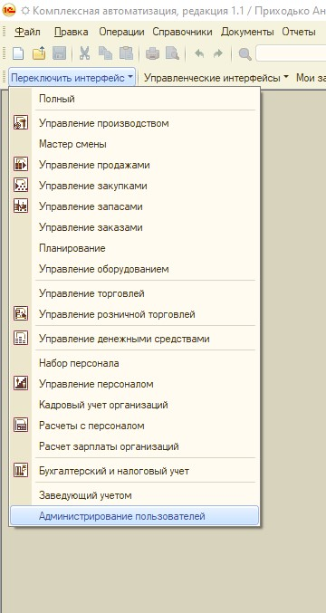В указанном интерфейсе на пункте главного меню Пользватели выбираем пункт Пользователи.
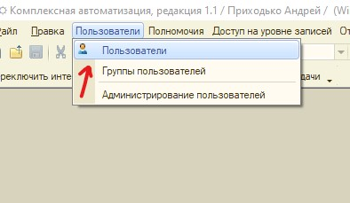В списке пользователей выбираем интересующего нас Пользователя. В данном случае это Точальный Дмитрий.
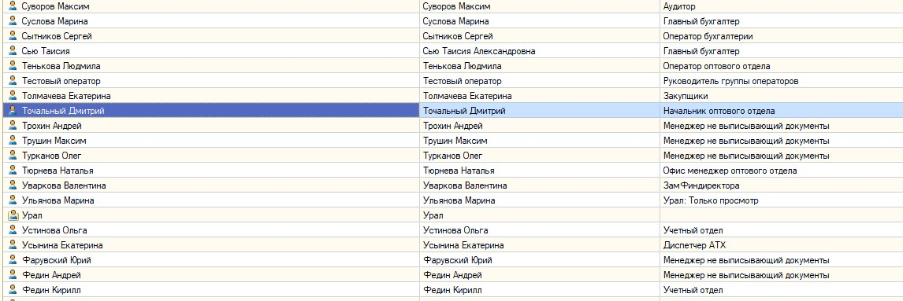В карточке пользователя Точальный Дмитрий узнаем какой у него профиль. У него профиль - Начальник оптового отдела.
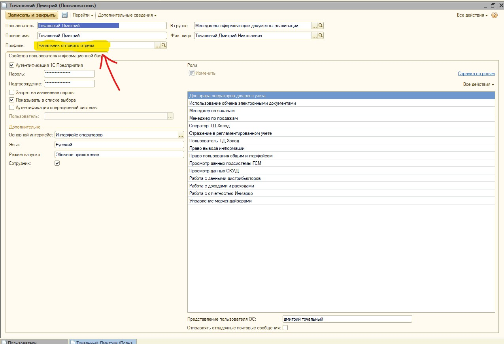После этого переходим на пункт главного меню Пономочия. Выбираем вкладку Профили полномочий пользователей
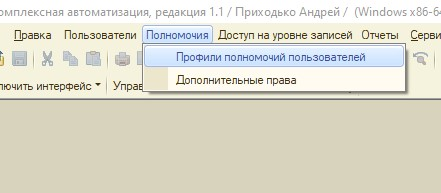В списке находим интересующий нас профиль, а имеено Начальник оптового отдела и кликаем по нему.
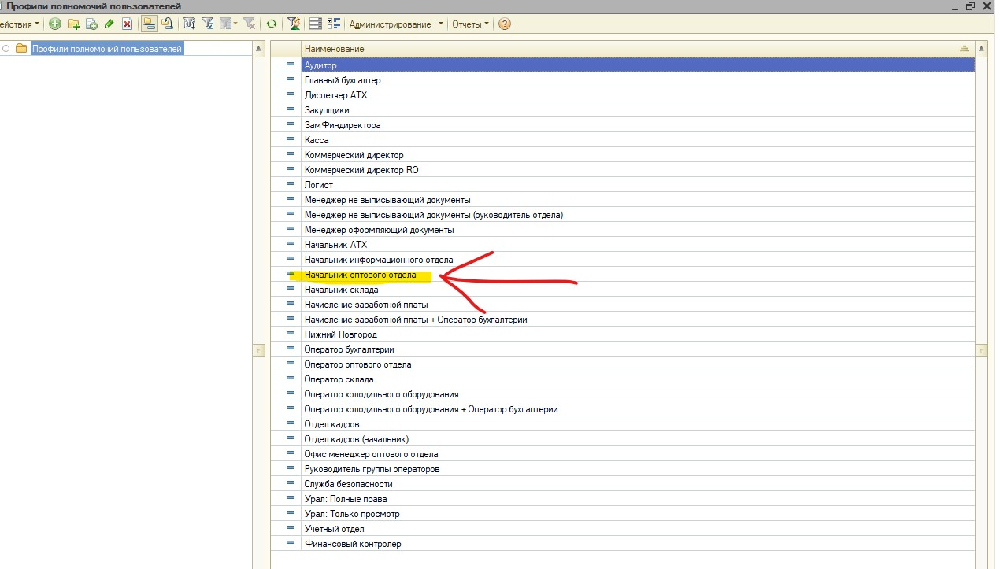В карточке профиля пользователя находим кнопку Изменить и кликаем по ней.
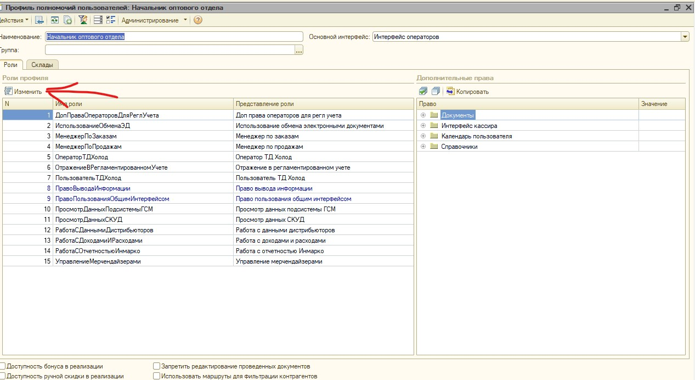После чего мы попадаем в окно Редактирование ролей: Начальник оптового отдела. Но то, что в этом разделе указанно это не является интерфейсами это просто Роли в которых настроен или отсутсвует доступ к каким-либо функциям. То есть нам нужнен интерефейс Управление доходами и расходами.
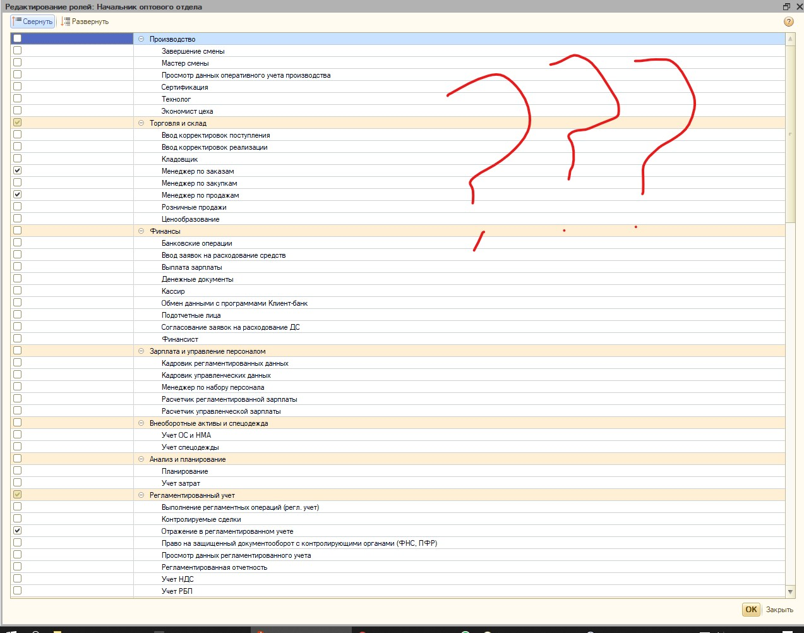Шагаем в конфигуратор и на вкладке общие находим объект конфигурации Роли. Тыкаем ПКМ и переходим на вкладку Все Роли
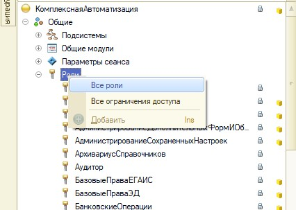В открывшемся окне слева выбираем интересующий нас объект конфигурации:УправлениеДоходамиИРасходами
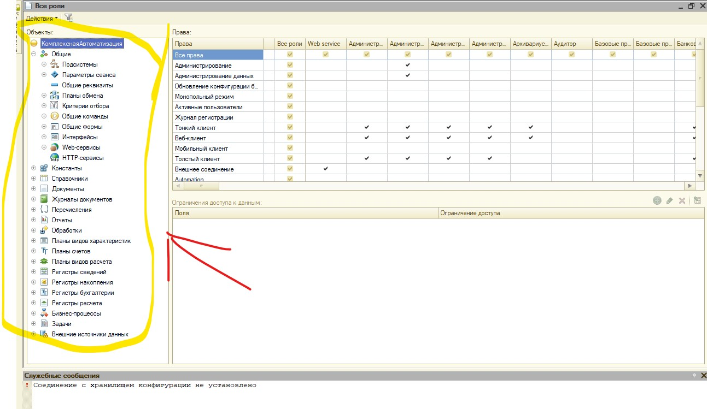Теперь справа мы видим список в котором указано в каких ролях данный объект конфигурации используется.После чего скролим его.
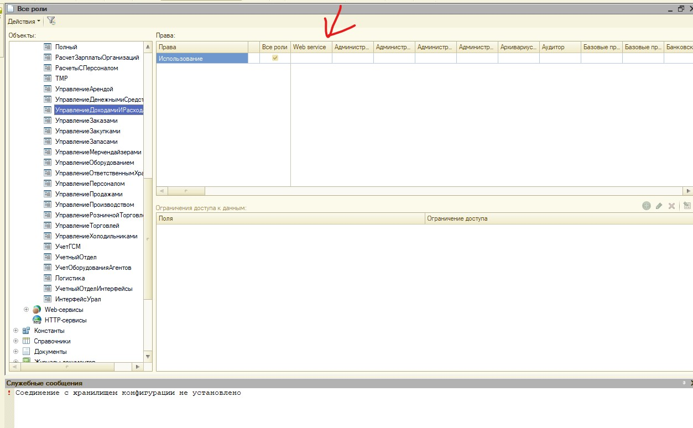Полные права нам явно не подходят. Ищем дальше
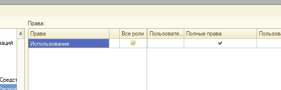А вот право Работа с доходами и расходами в самый раз. Оно то нам и подойдет.
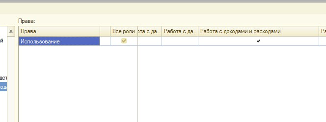Возвращаемся в предприятие и в списке Редактирование ролей мы у строки Работа с доходами и расходами выставляем галочку.
В открывшемся окне слева выбираем интересующий нас объект конфигурации:УправлениеДоходамиИРасходами
Теперь справа мы видим список в котором указано в каких ролях данный объект конфигурации используется.После чего скролим его.
Полные права нам явно не подходят. Ищем дальше
А вот право Работа с доходами и расходами в самый раз. Оно то нам и подойдет.